Penstrokes in black and red.
Return To Catalogue - Switzerland cancels on first federal issues, part 2 - Switzerland overview
Note: on my website many of the pictures can not be seen!
For more examples and an overview see the book of P.Mirabaud and A.De Reuterskiold; 'Les Timbres-Poste Suisses 1843-1862'. Upon the introduction of the federal stamps (5 April 1850), the prescribed cancellation was to apply a namecancel (town name usually in a straight line with or without date) on the envelope, accompagnied by a penstroke in black (obliteration a la plume). Although the penstroke was supposed to be black, red penstrokes also exist.
Penstrokes in black and red.
On 9 April 1850, the instruction was changed; instead of a penstroke, the cancel now should consist of a "PP" cancel, to be applied on each stamp individually. If the postoffice did not have a "PP" canceller, penstrokes were still allowed. In the next station with a "PP" cancel, the stamps should still be obliterated with a "PP" cancel (even though they already had a penstroke). There are quite a number of different "PP" cancels, applied in black, blue, red or green.
On 22 October 1850, this instruction was changed again. From now on, any "PP", "PD", "Franco" or any cancel at the post office dispostion could be used. This should be applied in the color black. For "PP", "PD" cancels, see Switzerland cancels on first federal issues, part 2
The grille cancel was introduced in 1854 and used upto half of 1857. These were used to cancel the stamps, while usually a date cancel was placed elsewhere on the letter. From 1857 this date cancel was used once only for both the stamps and letter.
Some typical cancels:
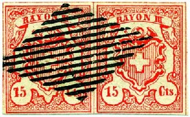


(Other colours, red, green and blue grill)


Most federal grille cancels are exactly the same, but the cancel
of Pfaffikon was damaged and can be attributed to this town.
I have also seen this grille cancel in blue, red
and green. The grille cancel is probably the most common cancel.
Its standardised format was with 15 lines.
St.Gallen used a similar cancel, but with 'ST G ' in the center:
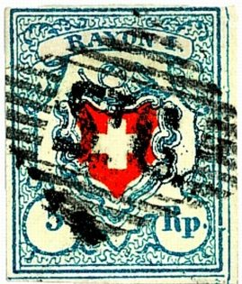
(St. Gallen grill cancel)


A rare Zaziwil grill cancel.

(Zurzach grille with holes)
Another grille cancel was used in Zurzach, the grill has holes in it.


Aargau grille cancel in black, blue and red color

Munsingen cancel.


Grille cancel of Yverdon.
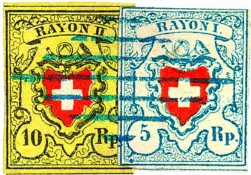

Blue Luzern cancel, 7 lines in a diamond shape, next to it a red
cancel, also exists in black
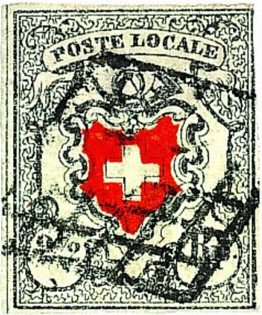
(left Geneva grille and right Chur grille cancel)

(Cancel from Endingen)

Aigle cancel

Chatelat cancel.


Grille cancel from Lenzburg.
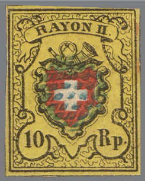
Very small grill cancel of Flims.

An unknown Grille cancel, very nicely applied. This might
actually be a forged cancel, since the pencancel can still be
seen vaguely under the grille cancel.

Another unlisted grill cancel with an additional "P.D"
cancel.
Basel 'FRANCO' cancel and Altstadten 'Franco.' cancel in
green

'Franko' cancel
According to Album Weeds, also the cancels 'FRANKO' and 'FRANGO' exist.


(Zurich Rosette cancel in black and blue)
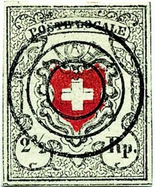
(rare 3-rings 'Biel' (=Bienne) cancel)


Biel 3-rings cancel and "R.L." in a box. Also
"R.L." alone.

Two-rings cancel of Lausanne
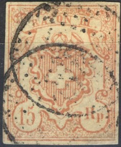
Dot cancel in circle (Punktstempel im Kreis) of Unterhallau,
second stamp certified genuine

Circular cancel of Trachselwald.
Other cancels
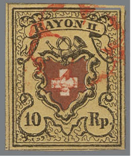
Geneva Rozette cancels.

("Chargé" cancel)

A Taxzahlenstempel '10' from Aubonne

Another rare cancel consisting of lozenged shaped dots surrounded
by a rectangle

Black rosette cancel of the town of Pfyn, certified genuine

'JJ' in a small circle for Josua Juon, the postmaster of the town
of Zillis.

Rectangle with smaller "ML" inside it (badly visible
here) from "Marie Lanz" in Wangen.
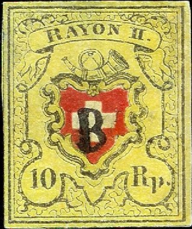
Small 'B' cancel of Bollingen.

'I' cancel of Schupfheim


"BRIEF DISTRIB BASEL" in a rectangle and
"LBpH" cancel of Basel.


"AARBERG" precancel and "OSSINGEN" cancel.

Belelay dots cancel, I've also seen it in red color.


"Lenk" cancels.

"LV" (Lettre Valoise)


Yverdon "R" in a small square cancel.
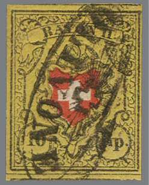
"OLIVONE" cancel

A Schupfheim cancel.

"Route de BERN" cancel?

"AARAU" and date in an rectangle with corners cut off.
Several other Aarau cancels in a rectangle also exist.
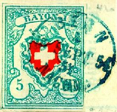


Corcelles cancel with date two posthorns at the bottom.

"BRUGG"

"RHEINECK" cancel.

"CAPPEL" in one line

"Schwarzenegg" cancel.
Be careful, many of the cancels have been forged on forged stamps, examples:
Probably Fournier (a famous forger) forgeries:
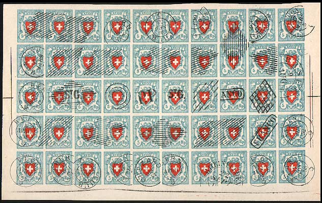
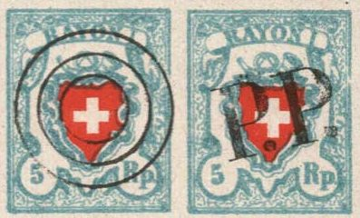
(2 stamps of this forged sheet)
Spiro forgeries:
The Spiro forgereis bear cancels that were never used in Switzerland, as far as I know (i.e. this particular square of dots or pattern of lines).
{kind=link}
{kind=link}
{kind=link}
{kind=link}
{kind=link}
{kind=link}
{kind=link}
{kind=link}
{kind=link}
{kind=link}
{kind=link}